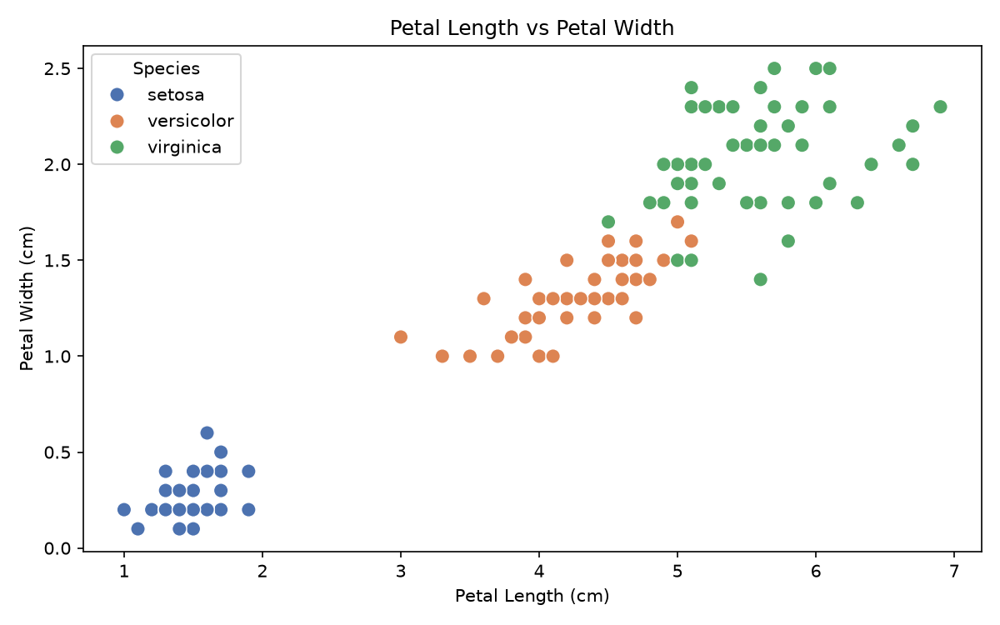
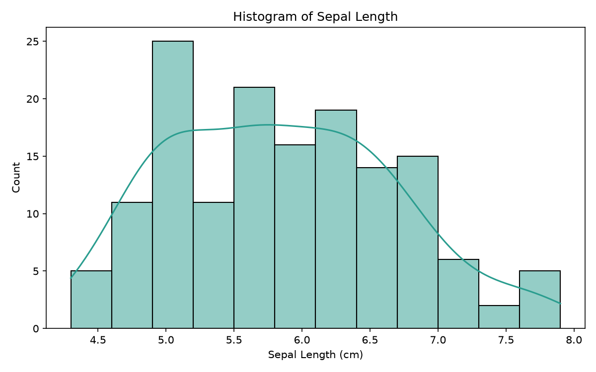
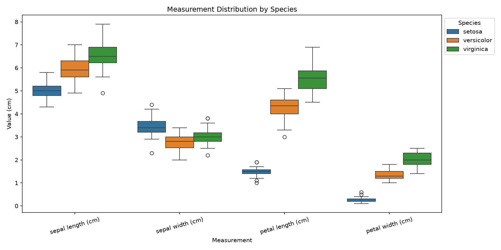
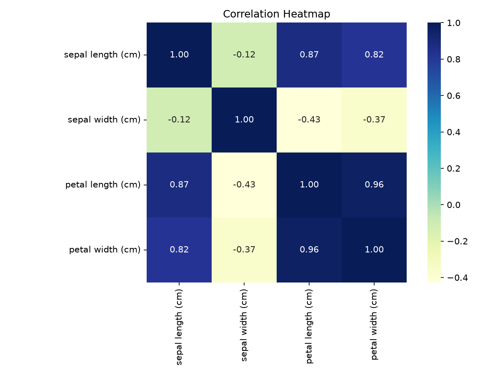

Data Science Showcase
From Raw Measurements to Decision-Ready Insights.
A polished walkthrough of the Iris dataset featuring clean preprocessing, statistical summaries, and visual storytelling designed for practical analysis.

Clean dataset ready for reuse.
Quick statistical comparisons.
Simple exploratory graphics.
Project Overview
What this project does
The script turns a famous machine learning dataset into a compact analysis workflow with polished outputs.
Why it works well
Clear structure, useful outputs, and a presentation-friendly finish.
This project keeps the analysis easy to follow by separating the raw data, the calculations, and the visuals. That makes it a strong starter template for small data science portfolios.
3
core outputs
4
visual summaries
1
clean workflow
Load the data
Fetch the built-in Iris dataset and convert it into a pandas DataFrame.
Save results
Export the cleaned dataset and statistical tables into reusable CSV files.
Create charts
Generate a histogram, scatter plot, box plot, and correlation heatmap.
Keep it organized
Store code, data, charts, and outputs in separate folders for clarity.
Dataset Information
The Iris dataset in simple terms
The dataset contains measurements from 150 iris flowers across three species. It is a classic starter dataset because it is small, clean, and easy to visualize.
- SourceBuilt-in scikit-learn dataset
- Rows150 samples
- FeaturesSepal length, sepal width, petal length, petal width
- ClassesSetosa, Versicolor, Virginica
Technology Stack
These are the technologies, programming languages, frameworks, tools, and libraries I use to build mobile applications and perform data science projects.
Python
Powerful programming language for Data Science, AI and Automation.
Dart
Language used to write clean and fast Flutter mobile apps.
Flutter
Cross-platform mobile application framework by Google.
Pandas
Data analysis library for structured tables and data cleaning.
NumPy
Foundational numerical computing library for scientific workflows.
Matplotlib
Plotting library for creating charts and visual stories.
Scikit-learn
Machine learning library for modeling, evaluation, and pipelines.
Git
Version control system for managing source code.
GitHub
Platform for code hosting, collaboration, and versioned projects.
Visual Studio Code
Lightweight editor used for coding, debugging, and projects.
Skills
Core strengths behind the analysis workflow
A practical mix of data handling, visualization, and publishing skills that keep the project clean, readable, and ready to share.
Python
Data cleaning, automation, and analysis logic.
Advanced92%
Data Visualization
Charts that explain patterns quickly and clearly.
Strong88%
Statistics
Summaries, comparisons, and correlation thinking.
Strong85%
Machine Learning
Model-ready thinking and feature awareness.
Growing81%
pandas & Seaborn
Structured tables and polished exploratory plots.
Reliable78%
GitHub Pages
Static publishing and presentation-ready delivery.
Confident74%
Statistics
Quick project facts that animate into view
These numbers summarize the analysis workflow, and they count up only when the section scrolls into view.
Projects
0Complete end-to-end Iris analysis project.
Datasets
0One clean Iris dataset prepared for analysis.
Charts
0Four visuals explain the dataset from different angles.
Python Libraries
0matplotlib, pandas, seaborn, and scikit-learn.
Learning Journey
My journey from Mobile App Development to Artificial Intelligence.
A chronological timeline showing how each stage shaped the next part of the path.
-
Flutter Development
CompletedStarted learning Flutter and Dart to build modern cross-platform mobile applications.
-
Python Programming
CompletedLearned Python programming fundamentals for automation, scripting, and data analysis.
-
Data Science
Currently LearningStudying data analysis using Pandas, NumPy, Matplotlib, Seaborn, and Scikit-learn.
-
Machine Learning
Learning NextLearning supervised and unsupervised machine learning algorithms and model evaluation.
-
Artificial Intelligence
Future GoalExploring Generative AI, LLMs, AI Agents, and intelligent software systems.
-
AI Engineer & Data Scientist
TargetMy goal is to become a professional AI Engineer and Data Scientist while building real-world AI products.
Folder Structure
How the project is organized
DataScience-GitHub-Challenge/
├── analysis.py
├── index.html
├── style.css
├── script.js
├── data/
│ └── iris.csv
├── charts/
│ ├── histogram_sepal_length.png
│ ├── scatter_petal_dimensions.png
│ ├── box_plot_measurements_by_species.png
│ └── correlation_heatmap.png
└── output/
├── summary.csv
└── group_statistics.csvCharts Gallery
Visual results from the analysis
Each chart helps explain a different part of the dataset.

Histogram
Shows how sepal length values are distributed.
Scatter Plot
Compares petal length and petal width by species.

Box Plot
Compares measurement ranges across all three species.

Heatmap
Highlights how the numeric features relate to each other.
Learning Outcomes
What a beginner can learn here
This project is a good first example of a full data workflow, from loading data to sharing results.
- How to load and inspect a dataset in pandas
- How to calculate summary statistics
- How to make charts with matplotlib and seaborn
- How to structure a small project neatly
- How to publish a static website with GitHub Pages
Contact
Get In Touch
Feel free to contact me for Flutter Development, Data Science, AI projects, collaboration, internships, or freelance opportunities.
Let’s build something impactful together.
I enjoy combining mobile development and data-driven problem solving to ship practical products. I’m open to discussing ideas, projects, and opportunities.
Location
Mardan, Khyber Pakhtunkhwa, PakistanAvailability
Available for internships, freelance work, and collaborations.
GitHub Repository Button
Want to see the code?
Open the repository to review the analysis script, charts, and outputs.